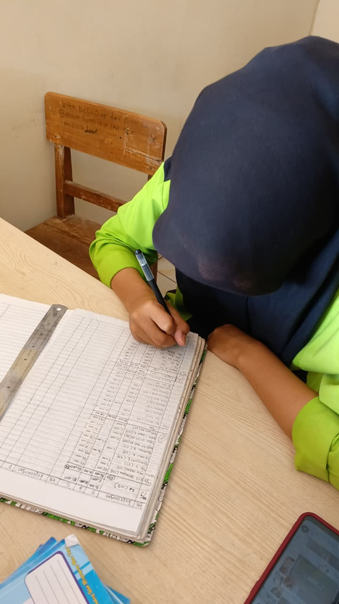

Akuntansi dan Keuangan Lembaga (AKL)
Informasi singkat tentang jurusan AKL

Akuntansi dan Keuangan Lembaga adalah jurusan di Sekolah Menengah Kejuruan (SMK) yang fokus pada pencatatan, penggolongan, dan penyusunan laporan keuangan secara manual maupun menggunakan sistem komputerisasi untuk berbagai jenis lembaga atau organisasi.
Materi meliputi prinsip akuntansi seperti prinsip biaya historis dan pengakuan pendapatan, serta siklus akuntansi mulai dari transaksi hingga laporan keuangan.
Informasi Umum
- Aplikasi Pengolah Angka & Komputer Akuntansi
- Manajemen Keuangan
- Sektor Pemerintahan
Catatan singkat
Untuk materi lebih lanjut: fokus pada keuangan lembaga, akuntansi keuangan, audit, perpajakan, dan komputer akuntansi.